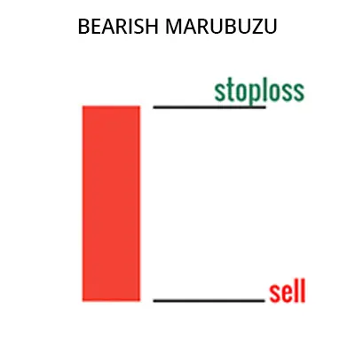
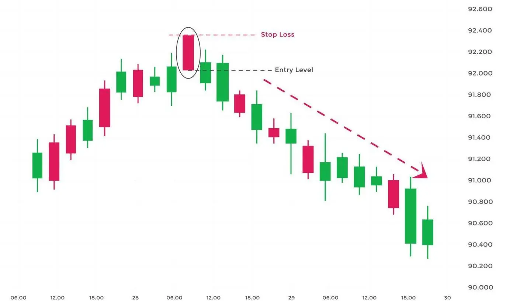

बियरिश मारुबोजु पैटर्न एक ट्रेडिंग पैटर्न है जो बाजार की ऊपर की दिशा का अंत सूचित करता है और नीचे की दिशा
का संकेत देता है। यह पैटर्न एक बड़े, लम्बे बॉडी वाली कैंडलस्टिक से बना होता
है जिसकी ओपनिंग और क्लोजिंग मूल्य समान होते हैं।
